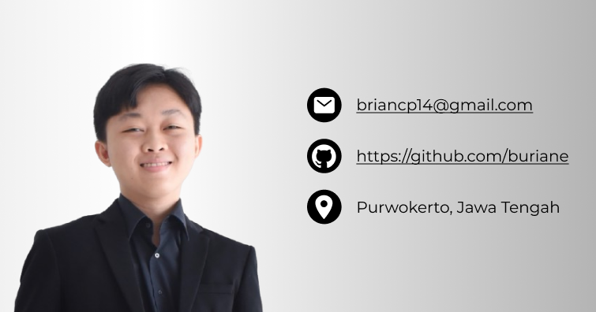

About Me

Brian Cahya (H1D022009)
Undergraduate Informatics Student at Jenderal Soedirman University
Undergraduate student of Informatics Engineering Universitas Jenderal Soedirman, class of 2022. Has completed 4 semesters with a focus on software development and information systems. Has experience in basic courses such as programming, data structure, and database. Internship experience as a Software Engineer creating an Online Registration System at St. Elisabeth Purwokerto General Hospital. Committed to continuously learning and developing skills in the IT field, and open to collaboration and new challenges.